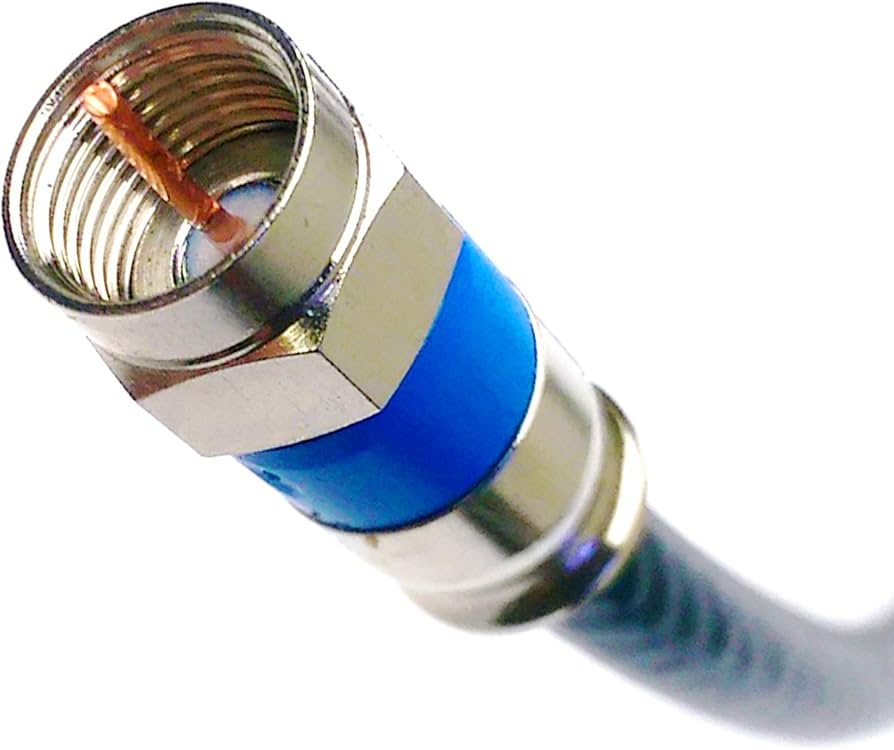

Tipos de Medios en Telecomunicaciones
Medios de Transmisión
-
Cable de Par Trenzado:
 Utilizado en redes telefónicas y de datos.
Utilizado en redes telefónicas y de datos.
-
Cable Coaxial:

Común en televisión y redes de datos.
-
Fibra Óptica:
 Transmite datos a altas velocidades mediante luz.
Transmite datos a altas velocidades mediante luz.
-
Ondas de Radio:
Utilizadas para transmisión inalámbrica.
-
Microondas:
 Para enlaces de larga distancia y comunicación satelital.
Para enlaces de larga distancia y comunicación satelital.
Medios Inalámbricos
-
Wi-Fi:
 Conexiones a Internet sin cables en áreas limitadas.
Conexiones a Internet sin cables en áreas limitadas.
-
Bluetooth:
Comunicación de corto alcance entre dispositivos.
-
Redes Móviles:
 3G, 4G, 5G para comunicaciones móviles.
3G, 4G, 5G para comunicaciones móviles.
-
Satélites:
 Para comunicación global y transmisión de datos.
Para comunicación global y transmisión de datos.
Medios de Transmisión de Datos
-
LAN (Red de Área Local):
 Conexiones dentro de un área limitada, como oficinas.
Conexiones dentro de un área limitada, como oficinas.
-
WAN (Red de Área Amplia):
Conexiones que abarcan grandes distancias.
-
VPN (Red Privada Virtual):
 Conexiones seguras a través de Internet.
Conexiones seguras a través de Internet.